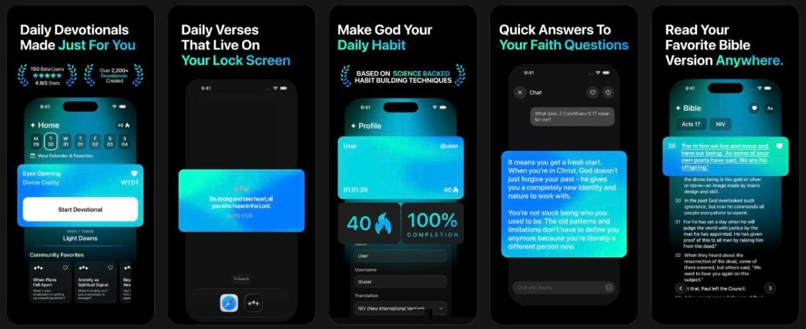

Rapha
iOS · 2024
An iOS app that writes a daily devotional plan for you, shaped by how you’re doing and what you rate.

problem
Most devotional apps give every user the same content, which makes it hard for people to stay engaged.
what i built
- A multi-stage Claude pipeline that turns onboarding answers into a multi-week plan.
- Each week is generated in parallel with the prior week as context, so nothing repeats.
- A SwiftUI app with Apple and Google sign-in, streaks and a paywall.
- End-of-cycle ratings shape the next plan.
how it works
Generation runs inside Postgres. A trigger queues later weeks when a plan is created, and pg_cron with pg_net drives a retrying job processor on Supabase Edge Functions.
stack
SwiftUI, TypeScript, Supabase, PostgreSQL, Claude.